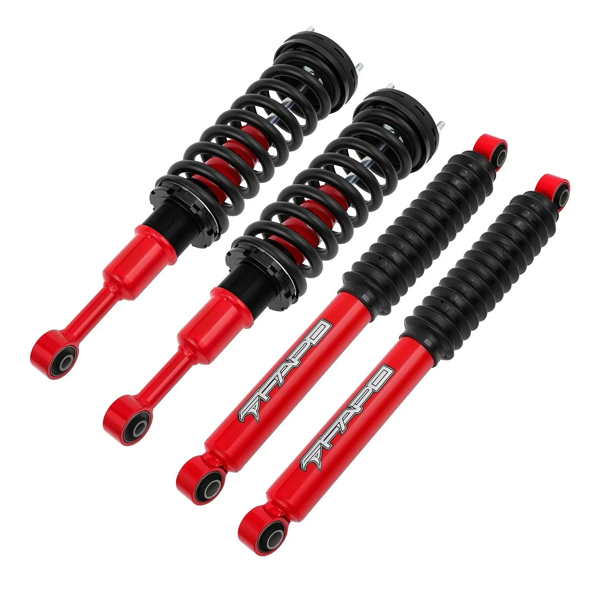

1 / 21FAPO P1 off-road Full Set 0-2" Lift Struts Do Toyota Hilux 2006-2025
Zastosowanie: Toyota Hilux 2006-2025 (4WD i RWD) Zawartość zestawu: Regulowana wysokość podnoszenia: 0–2 cala: 2 x przednie rozpórki gwintowane FAPO P1 Zmodyfikowana niestandardowa wysokość podnoszenia 0–2 cala: 2 × Amortyzatory tylne FAPO P1 Cechy produktu: Dodatkowe 10%-20% siły tłumienia Konstrukcja konstrukcji dwururowej P1 Chromowane, hartowane tłoczysko Tuleja gumowa odporna na zimno Zaprojektowany do użytku w…
Application: Toyota Hilux 2006-2025 (4WD & RWD) Package Includes: Adjustable 0-2 in. Lift Height: 2 × FAPO P1 Front Coilover Struts Modified Custom 0-2 in. Lift Height: 2 × FAPO P1 Rear Shock Absorbers Features: Extra 10%-20% damping force P1 twin-tube structure design Chromed hardened piston rod Cold-resistant rubber bushing Designed for heavy load off-road use Technical Specifications: Extended Length: 22.24 in. (Front), 23.86 in. (Rear) Collapsed Length: 16.73 in. (Front), 14.96 in. (Rear) Travel Length: 5.51 in. (Front), 8.90 in. (Rear) Shock Rod Diameter: 0.63 in. Piston Diameter: 1.26 in. Tube Diameter: 2.13 in.
2399,99 PLN
Opis produktu
Zastosowanie:
- Toyota Hilux 2006-2025 (4WD i RWD)
Zawartość zestawu:
- Regulowana wysokość podnoszenia: 0–2 cala:2 x przednie rozpórki gwintowane FAPO P1
- Zmodyfikowana niestandardowa wysokość podnoszenia 0–2 cala:2 × Amortyzatory tylne FAPO P1
Cechy produktu:
- Dodatkowe 10%-20% siły tłumienia
- Konstrukcja konstrukcji dwururowej P1
- Chromowane, hartowane tłoczysko
- Tuleja gumowa odporna na zimno
- Zaprojektowany do użytku w terenie z dużym obciążeniem
Dane techniczne:
- Rozszerzona długość:22,24 cala (przód), 23,86 cala (tył)
- Długość zwinięta:16,73 cala (przód), 14,96 cala (tył)
- Długość podróży:5,51 cala (przód), 8,90 cala (tył)
- Średnica pręta amortyzującego:0,63 cala
- Średnica tłoka:1,26 cala
- Średnica rury:2,13 cala
Application:
- Toyota Hilux 2006-2025 (4WD & RWD)
Package Includes:
- Adjustable 0-2 in. Lift Height: 2 × FAPO P1 Front Coilover Struts
- Modified Custom 0-2 in. Lift Height: 2 × FAPO P1 Rear Shock Absorbers
Features:
- Extra 10%-20% damping force
- P1 twin-tube structure design
- Chromed hardened piston rod
- Cold-resistant rubber bushing
- Designed for heavy load off-road use
Technical Specifications:
- Extended Length: 22.24 in. (Front), 23.86 in. (Rear)
- Collapsed Length: 16.73 in. (Front), 14.96 in. (Rear)
- Travel Length: 5.51 in. (Front), 8.90 in. (Rear)
- Shock Rod Diameter: 0.63 in.
- Piston Diameter: 1.26 in.
- Tube Diameter: 2.13 in.
FAPO Polska
Ten produkt obsługujemy lokalnie
Autoryzowana obsługa
FAPO Polska prowadzi katalog, kontakt i zamówienia bez odsyłania klienta do zewnętrznych sklepów.
Dobór po aucie
Sprawdzamy dopasowanie produktu do pojazdu, rocznika i wersji przed finalizacją zamówienia.
Wsparcie po zakupie
Masz kontakt w Polsce w sprawach zamówień, wysyłki, gwarancji i zwrotów.